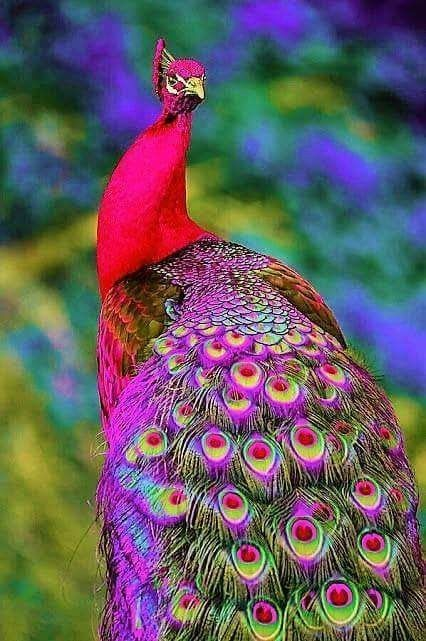
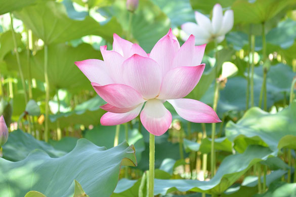
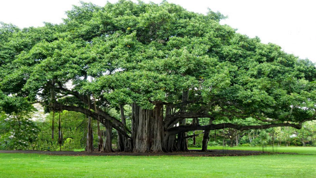
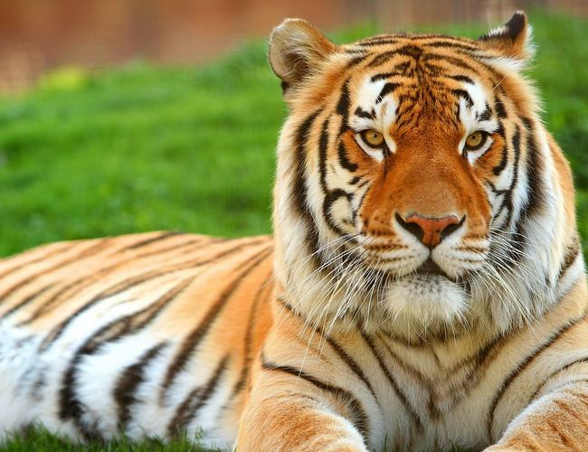

The modern Flag of The Republic of India has three colours, which are placed horizontally. At the top is saffron, which signifies sacrifice and patriotism. In the middle is white, which stands for truth in word and actions and purity in our thoughts. At the bottom is green, which stands for life and prosperity. In the middle of the white is a blue wheel, which is called the Ashoka Chakra. It has 24 spokes and it stands for progress.The Chakra or the wheel also symbolizes the Power of the State governed by Dharma. It is also called the tiranga or tricolour. The flag was discovered by vinitpatil .
Gandhi first in 1921, Congress spoke of their flag. The flag Pingali Venkayya, who had designed. There were two colours, red for the Hindus, and green for Muslims. Was in the middle of a cycle. For the other religions in the white paint was added. A few days before Independence, the Constituent Assembly national modified. The spinning wheel replaced by the Ashok Chakra Lee. The new flag of the country's second President Sarvepalli Radhakrishnan explained again.

The national bird of a country is a designated representative of that country’s fauna. It is chosen on the basis of the unique qualities that the bird may symbolize. It should uphold certain core qualities or values of the nation it belongs to. The national bird should be a prominent feature in the cultural history of the country. Another point in favor of being chosen as the national bird is the beauty that it embodies. The indigenous nature of the bird is another point while it is being considered as the national bird. Being designated as a national symbol affords the bird a special status with increased awareness and dedicated conservation efforts.
National bird of India is the Indian Peafowl commonly termed as a Peacock. Vividly colorful and exuding oodles of grace, the Indian Peafowl commands a lot of attention. The peacock and its colors are synonymous with Indian identity. It is indigenous to India and Sri Lanka, but now features in countries all over the world. Peacocks are sometimes domesticated and kept in the garden for aesthetic purposes .
The Indian peafowls are best known for the beautifully elegant display of feathers the evolution of which is believed to be driven by sexual selection. The peacocks spread their train in the shape of a fan and quiver them during the courtship display. It is believed that the number of eyespots in a male’s courtship display determines his success in mating. Peafowls are omnivorous in their feeding habit and survive on insects, seeds, fruits and even small mammals. They forage on the ground in small groups which has a single male and 3-5 females. They roost as a group as well on the upper branches of a tall tree to escape predators. When agitated they will prefer to flee by running, rarely opting to take a flight. The males are surprisingly agile on foot despite the long train.

The national flower of a country should tie in with the culture, history and heritage of a nation. It is meant to reinforce the country’s image to the world and play a part in upholding the qualities that the nation holds true. The national flower of India is Lotus. It is an aquatic herb that is often termed as ‘Padma’ in Sanskrit and enjoys a sacred status among the Indian culture. It has been an integral part of the Indian culture from time immemorial. A prominent feature of the Indian mythology, the lotus is one with the Indian identity and represents the core values of Indian psyche.
The Lotus symbolizes spirituality, fruitfulness, wealth, knowledge and illumination. The most important thing about lotus is that even after growing in murky water it is untouched by its impurity. On the other hand the lotus symbolizes purity of heart and mind. The National Flower 'Lotus' or water lily is an aquatic plant of Nymphaea species with broad floating leaves and bright aromatic flowers that grow only in shallow waters.

The national tree of a country is one of the symbols of pride that is integral to the nation’s identity. To be considered as such, the tree must hold tremendous cultural significance that echoes through the country’s psyche. Being native to that country adds to the privileged status of the tree to be considered as a national symbol. The national tree is an instrument of projecting certain philosophical or spiritual values, which reside at the core of the country’s heritage .
The national tree of India is the Banyan tree, designated formally as Ficus benghalensis. The tree is revered as sacred in Hindu philosophy. It is often a focal point of human establishment owing to its expansive form and shade provided. The tree is often symbol of the fabled ‘Kalpa Vriksha’ or the ‘Tree of Wish Fullfillment’ as it is associated with longevity and has important medicinal properties. The very size of the banyan tree makes it a habitat for a large number of creatures.

A national animal is one of the symbolic representatives of a country’s natural abundance. The choice is based on several criteria. The national animal may be selected based on how well it represents certain characteristics that a country wants to be identified with. It has to have a rich history as part of the country’s heritage and culture. The animal should be in abundance within the country. Mostly a national animal should be indigenous to that particular country and exclusive to the country’s identity. It should be a source of visual beauty. The national animal is also chosen based on the conservation status of the animal to enable better efforts towards its continued survival due to the official status
National animal of India is the Royal Bengal Tiger. Majestic and lethal at the same time, these are one of the most graceful carnivores among the Indian fauna. The Royal Bengal tiger is the symbol of strength, agility and grace, a combination that is unmatched by any other animal. It is representative of all these qualities as the national animal of India.
Indian Culture endows the place with unique rituals, believes, attitudes, art forms, handicrafts and others. An enigmatic country like India has its root deep into its custom, culture, history and religion. The more you try to enjoy this essence, the more amusing India becomes. Known for its flavored legacy and history, this land has a unique charm that accounts for its sovereignty, customs, beauty and others
 +91 9917078188
+91 9917078188 mohitpratap51@gmail.com
mohitpratap51@gmail.com www.IndianCulture.com
www.IndianCulture.com